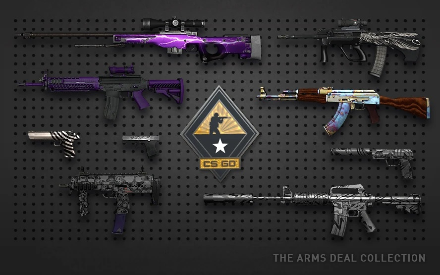
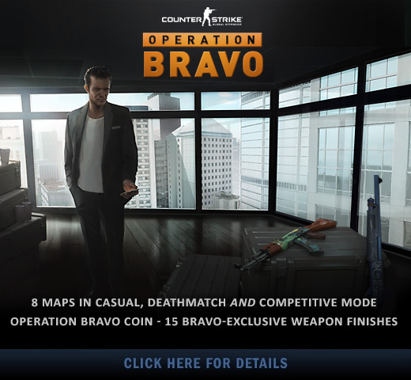
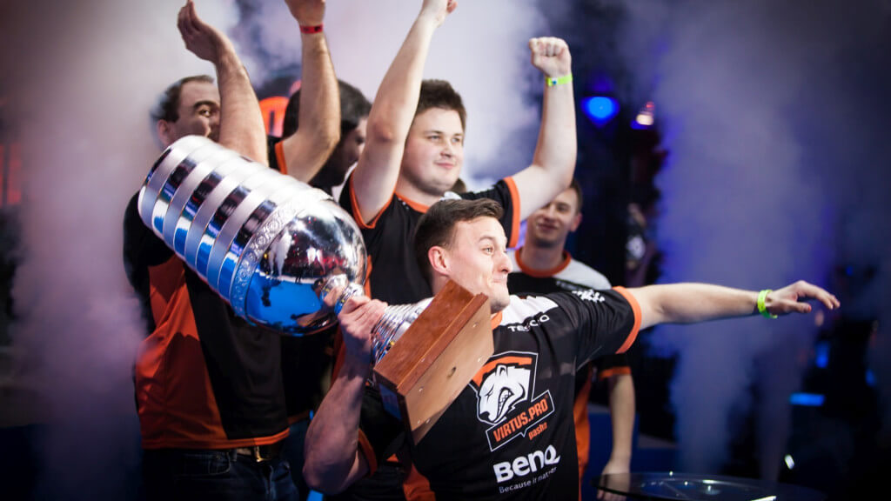
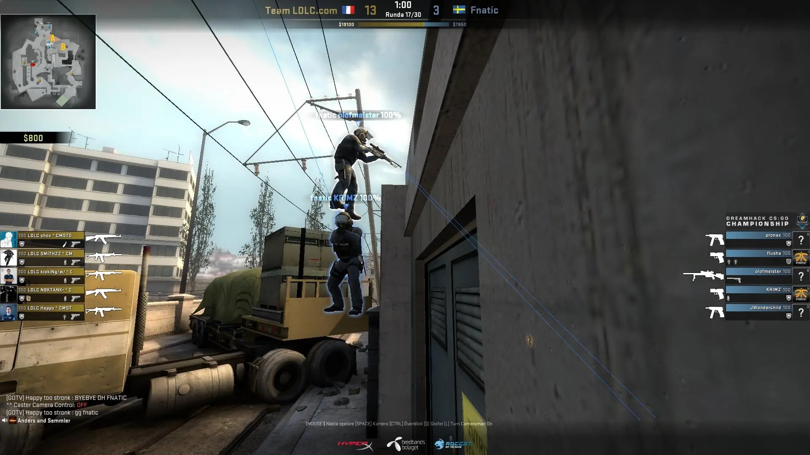
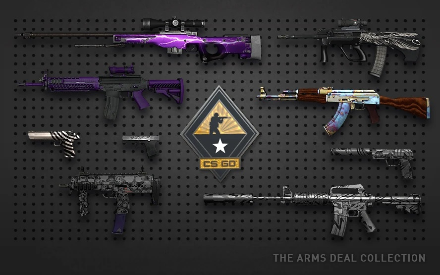
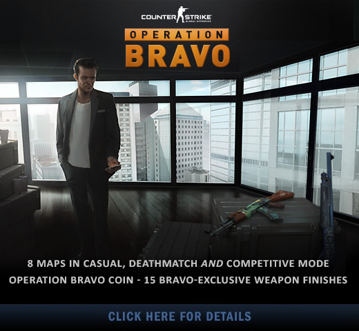
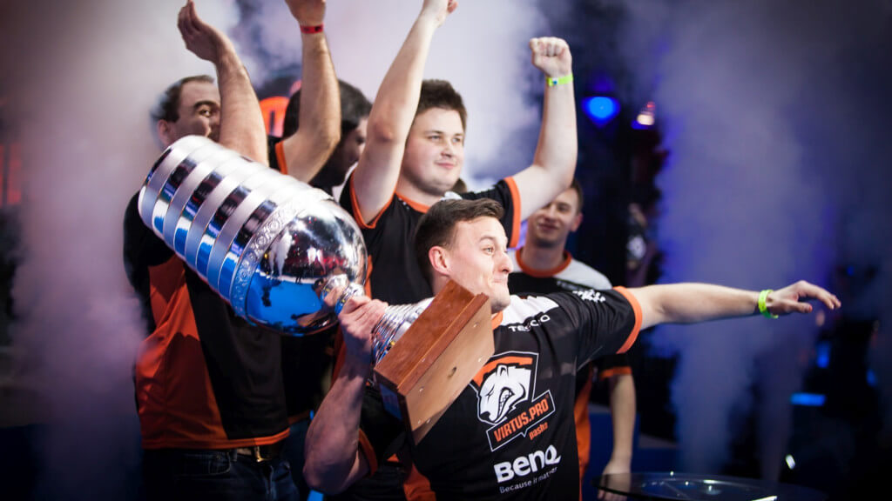
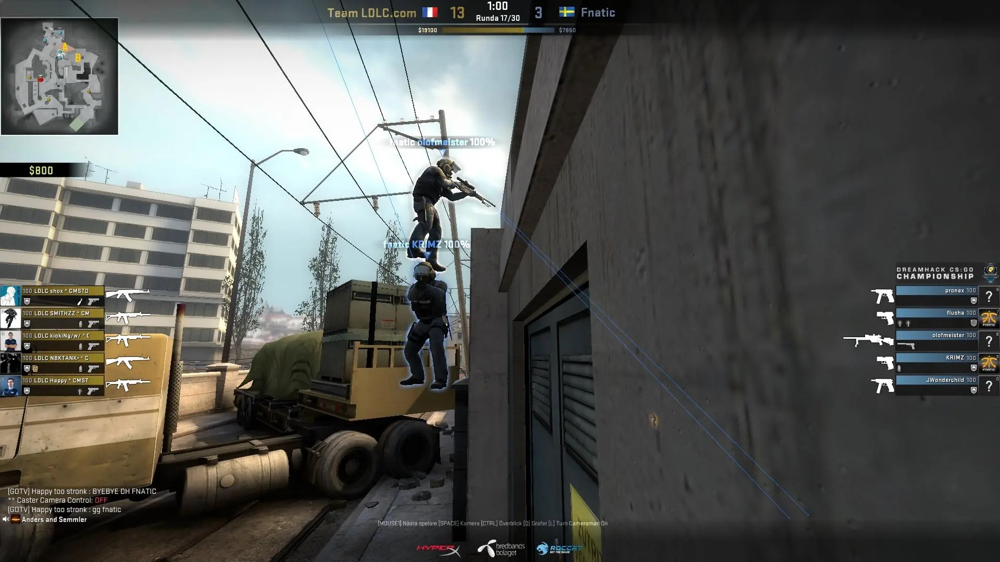
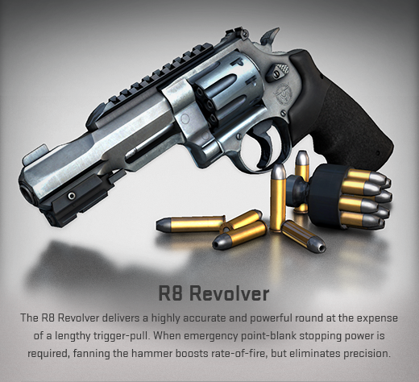
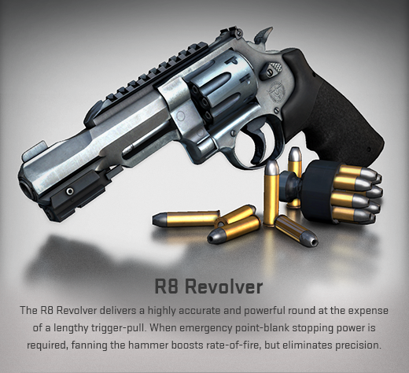

Wstęp
Seria Counter-Strike towarzyszy graczom od 1999 roku. Początkowo jako fanowska modyfikacja gry Half-Life, szybko zyskała rzeszę oddanych fanów, a co za tym idzie, wsparcie samych twórców zmodowanej gry. Rozgrywka opiera się na walce antyterrorystów z terrorystami, w której jedna ze stron musi bronić określonych miejsc na mapie lub uratować zakładników, a druga podłożyć bombę albo pilnować pojmanych.
Gra została stworzona z myślą o grze sieciowej. Odkąd otrzymała wsparcie od Valve, jest ciągle uaktualniana i stała się areną wielu turniejów e-sportowych.
Oś czasu
2012
Historia CS:GO zaczyna się od wydania tej gry przez amerykańskie studio Valve 21 sierpnia 2012 roku. Gra stała się następcą Counter-Strike: Source oferującą ulepszoną szatę graficzną, wspierany przez twórców system rankingowy z dedykowanymi serwerami i anti-cheatem, kilkoma trybami gry i regularnymi aktualizacjami z nowymi zawartościami.
Początkowo CS:GO nie spotkał się z ciepłym przyjęciem przez fanów, którzy wciąż woleli klasycznego Counter-Strike'a 1.6 i popularną za oceanem wesję Source. Jednak wkrótce miało się to zmienić dzięki nadchodzącym aktualizacjom, które odmieniły oblicze serii na zawsze.
2013
Operacja Payback
25 kwietnia zostaje wypuszczona pierwsza z wielu nadchodzących operacji, będącymi czymś w rodzaju periodycznych eventów dostępnych dla graczy za dodatkową opłatą. Gracz, który zyskał dostęp do operacji, dostawał również symboliczny żeton na swoim profilu, a co za tym idzie, fabularne misje do wypełnienia. Im więcej misji wypełnił gracz, tym wyższy stopień jego żetonu operacji. Ponadto, na czas operacji wprowadzonych zostało osiem najlepiej ocenianych przez społeczność fanowskich map, na których zagrać mogli wszyscy gracze.
Arms Deal Update
13 sierpnia Valve wydało poważną aktualizację nazwaną Arms Deal Update. Wprowadziła ona do gry coś przełomowego, a mianowicie wykończenia broni, tak zwane skórki. Skórki można otrzymać losowo pod koniec meczów rankingowych lub poprzez otwarcie skrzynek, będących czymś w rodzaju lootboxów (klucze używane do ich otwarcia można zakupić bezpośrednio na platformie Steam). Spowodowało to powstanie wirtualnego rynku, na którym gracze mogą wymieniać, kupować i sprzedawać posiadane skórki za prawdziwą walutę. Skórki dzieliły się na kilka jakości, z których te najrzadsze były najczęściej najbardziej pożądane, a co za tym idzie - najdroższe. Wyjątkowymi skórkami były skórki do noży, potrafiące osiągnąć zawrotne ceny rzędu kilkudziesięciu, a nawet kilkuset tysięcy złotych. Opróćz tego do gry zostały dodane dwie nowe bronie, M4A1-S oraz USP-S, charakteryzujące się tłumikami.
Pierwszy Major
Major jest skróconą nazwą rodzaju turniejów e-sportowych sponsorowanych przez Valve, zazwyczaj z pulą nagród większą od tych oferowanych na pozostałych turniejach. 16 września, miesiąc po opublikowaniu aktualizacji Arms Deal, Valve ogłosiło zorganizowanie pierwszego takiego turnieju w Szwecji. Pula nagród wynosiła wówczas 250 tysięcy dolarów i była w tamtych czasach zawrotną kwotą jak na turniej e-sportowy. Nagroda została częściowo sfinansowana z przychodu po niedawnej aktualizacji, a Global Offensive zyskał światowy rozgłos.
Operacja Bravo
19 września rozpoczęła się kolejna operacja nazwana Operacją Bravo. Podobnie jak Operacja Payback dodała ona do gry osiem nowych map, a także legendarną już Skrzynię Operacji Bravo. Limitowane skrzynie ze skórkami przyznawane były graczom za ukończone misje, aczkolwiek można było je również zdobyć na drodze losowych dropów na koniec meczów rankingowych.
Winter Offensive
W grudniu CS:GO doczekał się dużej aktualizacji dodającej z powrotem uwielbianą przez graczy mapę de_cobblestone,a także zupełnie nową de_overpass. Był to również początek dużego projektu rekonstrukcji starych map pamiętających czasy CS 1.6 i CS: Source, aby rzucić na nie nowe światło i podnieść ich jakość do standardów Global Offensive.
2014
W roku 2014 CS:GO jeszcze bardziej umocnił swoją dominację na rynku gier FPS. Trend wzrostowy był wyraźnie zauważalny na platformach streamingowych typu Twitch.tv, a także w serwisie YouTube, gdzie gra zyskała szczególną popularność w kręgu polskich twórców. Do sukcesu CS:GO w naszym kraju przyczynił się polski zespół e-sportowy Virtus.pro, który w marcu zatriumfował nad drużyną Ninjas in Pyjamas w finale turnieju rangi Major zorganizowanym w katowickim Spodku. Drużyna urosła do rangi legendy i znakomita większość osób zainteresowanych nowożytnym e-sportem na pewno kojarzy jej nazwę.
Operacja Phoenix
Trzecia wydana w CS:GO operacja, nazwana Operacją Phoenix, dodała nową skrzynię oraz osiem znanych z wcześniejszych operacji map społeczności. Ze względu na powtarzające się mapy, przepustka tej operacji została wyceniona na 2,99 dolarów, co czyni ją najtańszą ze wszystkich operacji w historii gry.
Operacja Breakout
Operacja Breakout dodała do gry na stałe znaną z poprzednich operacji mapę de_cache, która umieszczona została w mapach czynnej służby, czyli grupie map rozgrywanych na turniejach e-sportowych oraz na meczach rankingowych. Została tam przeniesiona razem z mapami de_cobblestone i de_overpass, zwiększając pulę map z pięciu do ośmiu. Ze względu na konieczność przebudowy usunięty został z niej jednak de_train, pozostawiając w puli siedem map.
Olofboost i kontrowersje na Majorze
Ćwierćfinał rozgrywanego w listopadzie Majora DreamHack Winter 2014, a konkretniej mecz fnatic - LDLC na finałowej mapie de_overpass zakończył się skandalem po tym, jak gracz zespołu fnatic o pseudonimie olofmeister wykorzystał ze swoją drużyną tzw. pixel bug, czyli błąd mapy polegajacy na umożliwieniu graczowi dostępu do niewidzialnego miejsca na planszy, dzięki któremu zyskuje on znaczną przewagę nad przeciwnikami. Fnatic zrobiło comeback z wyniku 3-12 na 16-13, wygrywając przy tym cały mecz i eliminując drużynę LDLC z turnieju. Przegrana drużyna zgłosiła organizatorowi zażalenie, argumentując je nieczystą grą przeciwnika i żądając powtórzenia mapy. Ostatecznie zespół fnatic poddał mecz, a drużyna LDLC wkrótce wygrała cały turniej.
Operacja Vanguard
11 listopada wystartowała Operacja Vanguard dodająca do gry sześć całkowicie nowych map społeczności oraz przywracająca do puli map czynnej służby zrekonstruowaną mapę de_train. Przerobiona mapa zastąpiła przestarzałego de_nuke, który skierowany został na dogłębną przebudowę. Operacja Vanguard składała się z czterech kampanii, z czego dwie z nich były dodatkowo płatne, co spowodowało poruszenie w społeczności gry.
2015
Skandal z ustawianiem meczów
16 stycznia dziennikarz e-sportowy Richard Lewis opublikował głośny artykuł o ustawianiu meczów przez członków amerykańskiej drużyny iBUYPOWER w sierpniu 2014 roku. Dowody zebrane przez autora tekstu były niezbite, a Valve zareagowało natychmiastowo. Wszyscy zamieszani w skandal zostali bezterminowo zbanowani z wszelkich turniejów organizowanych przez studio, co poskutkowało rozszerzeniem bana przez inne organizacje e-sportowe, a finalnie rozpadem drużyny iBUYPOWER i wycofaniem się organizacji ze świata e-sportu.
Operacja Bloodhound
26 maja rozpoczęła się długo wyczekiwana Operacja Bloodhound. Wraz z operacją do gry została dodana zupełnie nowa mechanika punktów doświadczenia i poziomów gracza, które od tamtego momentu definiowały kiedy dany gracz dostanie dropa, a także Skrzynia Falcjonu, a w niej nowy rodzaj skinów do noży. Zaktualizowane zostały również hitboxy (niewidoczne modele kolizyjne odpowiadające za rejestrowanie trafionych strzałów), które zmieniły kształt z prostopadłościanów na bardziej cylindryczne i dopasowane do graficznch modelów postaci.
Kontrowersja rewolweru
W grudniu w ramach aktualizacji świątecznej do gry została dodana nowa broń potencjalnie zastępująca popularny pistolet Desert Eagle, a mianowicie Rewolwer R8. Broń zadawała ogromne, wręcz nieproporcjonalne obrażenia, co spowodowało ogromne kontrowersje w społeczności graczy, którzy opisywali ją jako niezbalansowaną, nieprzewidywalną i po prostu nieprzemyślaną.
2016
Rok 2016 w CS:GO był rokiem nieudanych aktualizacji
Operacja Wildfire
Zepsute hitboxy
Latem 2016 roku gracze CS:GO odkryli dziwne błędy w systemie hitboxów. W wielu przypadkach były one tak przesunięte względem modelu graficznego, że gra rejestrowała trafienie nawet wtedy, gdy atakujący celował wysoko nad głową oponenta, a nie rejestrowała go, gdy atakujący celował prosto w głowę. Zostało to naprawione w rekordowo krótkim czasie (poniżej 24 godzin), a podobny problem nie wystąpił już nigdy.
Nowe dźwięki
Pod koniec września wydana została aktualizacja drastycznie zmieniająca dźwięki wystrzałów wszystkich broni w ramach zwiększenia ich jakości i realizmu. W ramach uzupełnienia aktualizacji, w grudniu nastąpiło wydanie dźwięków w wydaniu HRTF, aby lepiej symulować dźwięki poza zasięgiem wzroku.
Graffiti
6 października do gry zostały dodane znane i lubiane w poprzednich odsłonach gry graffiti. Zostały one jednak zmienione do tego stopnia, że gracze nie zainteresowali się nową funkcją w przeciwieństwie do oczekiwań Valve. W przeciwieństwie do CS 1.6 i CS:S, treść graffiti była narzucona przez dostępne w grze (zazwyczaj płatne) wzory, a umieszczanie ich na mapach limitowane do jednego na minutę.
2017
IN PROGRESS
Operacja Hydra
2018
IN PROGRESS
Panorama UI
2019
IN PROGRESS
Operacja Shattered Web
2020
IN PROGRESS
Operacja Broken Fang
2021
IN PROGRESS
Operacja Riptide
2022
IN PROGRESS
2023
IN PROGRESS
 







 
